Torna alla pagina di Economia ed Organizzazione Aziendale
:: Economia ed Organizzazione Aziendale ::
Lezione 14/04/2008
K-Funzionamento
Reddito e K-Funzionamento (capitale di funzionamento) sono strettamente interconnessi.
Il K-Funzionamento in termini qualitativi è formato da:
- BENI DI PROPRIETA'
- materiali
- immateriali
- software
- brevetti/marchi
- avviamento(fusione con altre imprese, che hanno già della clientela)
- costi d'impianto
- finanziari
- MERCI IN MAGAZZINO
- CREDITI
- DISPONIBILITA' LIQUIDE
- DEBITI(breve/medio/lungo termine)
- v/fornitori - funzionamento
- v/banche - finanziamento
- MEZZI PROPRI
- COSTI E RICAVI non di competenza dell'esercizio
Schema Logico Riassuntivo
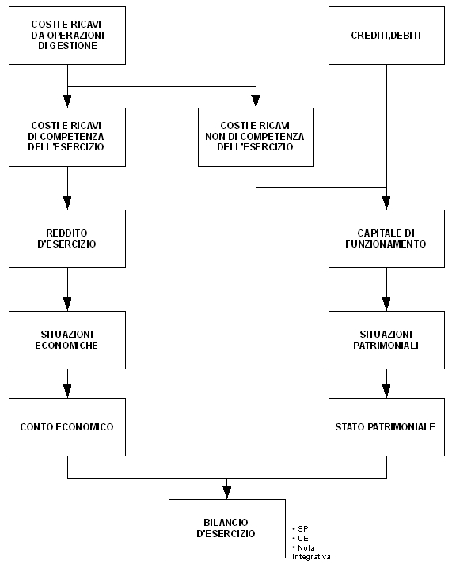
Obbligo di redazione del bilancio
Deve essere fatto da persone giuridiche, quelle obbligate a farlo sono:
- società di capitali(SPA, SRL)
- società cooperative
- consorzi
- enti pubblici locali
Situazione Patrimoniale
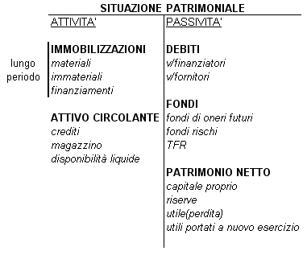
Esercizio 1
Al 31/12 un'impresa commerciale presenta i seguenti valori patrimoniali:
- investimenti in beni pluriennalinota1, non di competenza dell'esercizio:
FABBRICATI 250; IMPIANTI E MACCHINARI 125; ATTREZZI 25; AUTOMEZZI 30
- rimanenze di magazzino:
MERCI 100; MATERIALI DI CONSUMO 10
- crediti:
V/CLIENTI 60; CREDITI DIVERSI 2.5
- disponibilità liquide:
BANCA C/C ATTIVI 4; DENARO IN CASSA 1
- debiti:
MUTUI PASSIVI 150; DEBITI V/FORNITORI 90; DEBITI V/BANCHE 50; DEBITI DIVERSI 20
nota1 : sono investimenti, quindi costi che permangono a servizio dell'impresa per più esercizi
RICHIESTA:
Costruire la situazione patrimoniale(che descrive in un istante il patrimonio)
SOLUZIONE:
1°passo: inserisco i valori nel prospetto
2°passo: calcolo il totale attività
3°passo: calcolo il totale passività
4°passo: per differenza calcolo il patrimonio netto(TOT ATTIVITA' - TOT PASSIVITA')
5°passo: calcolo il totale a pareggio
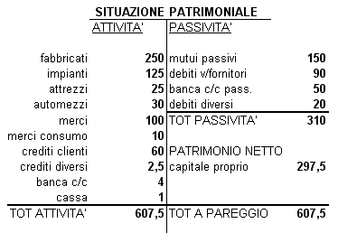
Il K-funzionamento vale 607.50. E' un valore di STOCK.
I valori possono essere di due tipi:
- STOCK: fotografia in un dato istante
- FLUSSO: nuova ricchezza che si genera attraverso l'attività di gestione(reddito), cioè nel corso di un esercizio
Reddito d'esercizio
E' la differenza tra ricavi e costi di competenza.
La competenza economica è indipendente dalla manifestazione monetaria.
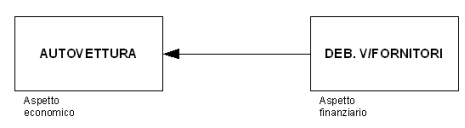
Componenti di reddito
Ci possono essere due casi:
1°CASO: i componenti di reddito hanno manifestazione finanziaria posticipata.
IPOTESI: 2 esercizi consecutivi
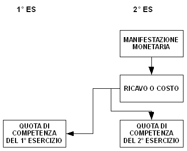
2°CASO: i componenti di reddito hanno manifestazione monetaria anticipata.
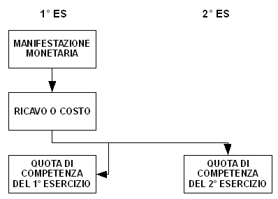
Esercizio 2
1 marzo 2000 un'impresa concede un prestito per 91250. Maturano gli interessi semestrali posticipati del 5%. Il prestito viene rimborsato il 1 marzo 2001.
OPERAZIONI DI GESTIONE:
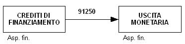
maturano gli interessi attivi, tutti di competenza dell'esercizio dell'anno 2000.
maturati interessi in parte di competenza dell'anno 2000.
In data 1/9/2000 riceviamo interessi attivi(I)
I = C * i * t
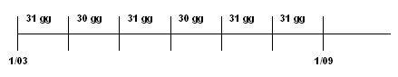
C = 91250
i = 0,05
t = 184 giorni
I = (91250 * 0,05 * 184) / 365 = 2300
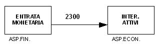
tutto di competenza dell'es.2000
31/12: sono già maturati degli interessi attivi per il periodo 1/9/2000 - 31/12/2000, anche se la manifestazione monetaria avverrà il 1/3/2001
- per calcolare il K-funzionamento dobbiamo inserire il credito presunto
- per calcolare il reddito si deve calcolare la quota di interessi attivi di competenza
INTERESSI SEMESTRALI
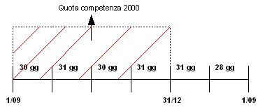
I = C * i * t = (91250 * 0,05 * 181) / 365 = 2262,50
dobbiamo calcolare la QUOTA DI INTERESSI ATTIVI DI COMPETENZA DEL 2000,entro il 31/12
2262,50 : 181 = x : 122
cioè INT.ATTIVI : GIORNI = INT.ATTIVI : GIORNI
quindi x = (2262,50 * 122) / 181 = 1525
SITUAZIONE CONTABILE ES.2000
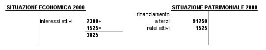
ANNO 2001:
Il 1/3/2001 viene rimborsato il finanziamento e si incassano interessi attivi.
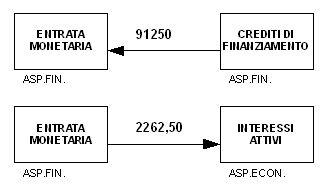
Gli interessi di competenza del 2001 sono pari a:
2262,50 - 1525( QUOTA DI INTERESSI DI COMPETENZA 2000 ) = 737,50
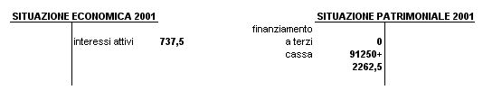
RATEI ATTIVI: variazione numeraria attiva presunta.
ENTRATA MONETARIA: variazione numeraria attiva certa.
Torna alla pagina di Economia ed Organizzazione Aziendale